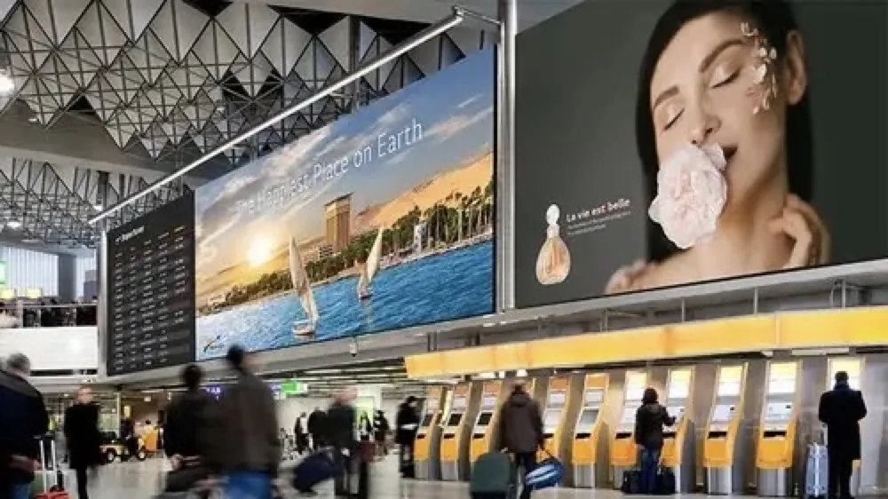
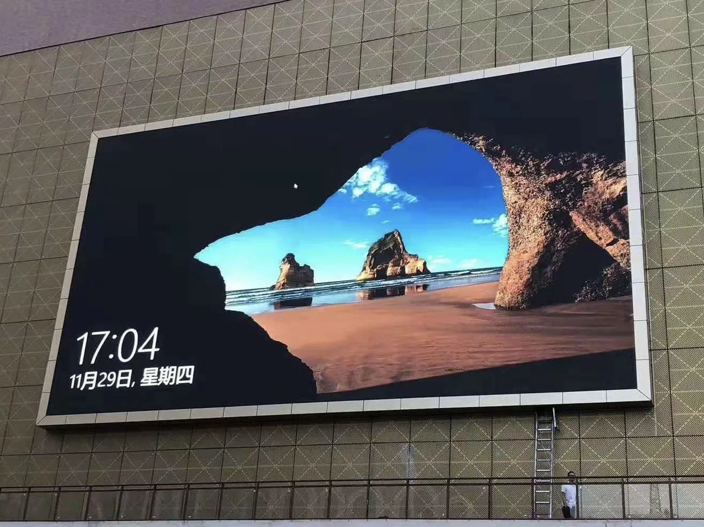

What is an IK impact rating for a public-realm LED display? It is a code from IEC 62262 (also published as EN 62262) that states the degree of protection an enclosure provides against mechanical impact, on a scale from IK00 to IK10. In a transit hall, a concourse, a street frontage or any place where people, luggage or carts can reach the face, the buying decision is whether the RFQ names that code, the face that must meet it, and the evidence required — or whether a “robust,” “anti-collision” or relative knock-resistance claim is left to stand in for a test.
This guide is for owners, architects and integrators specifying LED in airports, stations and other public-reachable positions. It covers only impact and vandal-resistance requirements. It is not an airport or transport-hub selection overview; those belong in the airport concourse signage guide, the airport terminal guide and the transport-hub buying guide. Ingress protection (dust and water) is a different clause and is covered in the IP rating guide. Do not copy an IP code into an IK clause, or the other way around.
A wall in a boardroom is rarely struck. A column in a concourse, a low-level wayfinding face, or a street-level frontage is. Luggage, trolleys, cleaning equipment, bikes and deliberate interference all land on the same modules that carry the picture. An impact clause is there so a bidder cannot offer a close-view indoor face, or an untested coating, in a position that will be hit, and so the test is defined before a damaged module becomes a maintenance argument.
The clause should say where the face is reachable. A display hung high above a ticket hall may still need a rating at its lower edge, or it may be specified only for cleaning and maintenance access; a floor-to-ceiling column or a low totem is a different exposure. Height, setback, barriers and whether the public can walk up to the glass line all belong on the drawing, not only in a generic “public LED” sentence.
IEC 62262 assigns a code to an impact energy, from IK00 (not protected) through IK07 (2 J), IK08 (5 J), IK09 (10 J) and IK10 (20 J), with the lower codes used for lighter blows. The official standard is the source for the test apparatus, the number of blows and the conditions; this article does not invent a test geometry or a pass mark beyond that published scale. Write the code the project or the authority already requires, and name the edition of the standard, rather than inventing a house number that is not in the bid documents.
For an LED display, three questions matter as much as the code itself. First, what was tested: a module, a cabinet, a complete assembly, a face with or without a coating or a protective glass, or only a metal frame? Second, what was the acceptance: a cosmetic mark, a broken lamp, or a loss of picture? Third, does the rating still apply after the proposed finish, a GOB or COB face, or a site-fitted spreader or bumper? A code without those answers is difficult to compare between bids.
Figure 1 shows large overhead advertising displays in an airport hall above ticket machines and passengers with luggage. Height changes the impact exposure: a high face is a different clause from a column or a low-level screen that people can walk up to.

None of the Asia Vision pages typically used for transit, street-level or indoor public positions publish an IK code, an IEC 62262 test report, or a joule rating. That is the starting point for the RFQ: the code and the evidence have to be requested and confirmed on the quotation for the proposed series and construction, or the project has to accept that an engineer will specify a tested guard, a glass, or a setback instead. Do not infer an IK code from a COB or GOB face, from an IP rating, from brightness, or from a relative “times more robust than SMD” figure.
What those pages do publish, and what is relevant to choosing a series rather than to certifying impact, is the following. D-PRO is an outdoor fixed SMD series for positions read from a distance — roadside advertising, building signage and similar — with P5 / P5.7 / P6.67 / P8 / P10, a 480 × 320 mm die-cast aluminium module, front maintenance, brightness up to 10,000 cd/m², and common-cathode or common-anode options. The short specification table does not publish an IP code or an IK code.
COB EF is an outdoor fixed fine-pitch COB series for closer audiences in bright positions such as flagship facades, shopping-street frontages, transport concourses and building entrances: P1.5625 / P1.953, flip-chip COB, 250 × 250 mm or 150 × 168.75 mm modules, a 500 × 500 mm die-cast aluminium cabinet, refresh ≥3840 Hz, brightness 3000 cd/m², contrast ≥10000:1. The page describes a die-cast module with an integrated power box and “dustproof, anti-static, anti-collision protection,” and it states that the bonded COB face has no individual lamp to knock off. Those are qualitative statements, not an IK code. COB EH-PRO is a premium outdoor fine-pitch COB series for closer-than-billboard positions, including commercial frontages, transport concourses, stadium concourse walls and building entrances: P1.5625 / P1.953, 250 × 250 mm module, 500 × 500 × 90 mm die-cast aluminium cabinet, refresh ≥3840 Hz, brightness 3500 cd/m², contrast ≥10000:1, and a published IP65 rating. The page quotes 4.5× robustness compared with SMD, in the context of impact, moisture and ESD resistance. That relative figure is not an IK code and must not be written into a bid as one.
X Series is an indoor all-platform series aimed at shopping malls, showrooms, retail and airports, with COB P1.25 / P1.56 / P1.95 (flip chip and virtual) and SMD P1.25 / P1.56 / P1.95 / P2.6 / P2.97 / P3.91 (GOB selectable), a 250 × 250 mm module, cabinets 500 × 500 / 250 / 1000 × 500 mm, no backshell, front service, and front or rear installation. The page recommends a sealed COB face where people can touch the screen, GOB where a protective coating is needed over a conventional module, and SMD where the face is protected. That is a module-choice discussion, not an IK rating. The series is aimed at indoor and protected positions; where the screen faces weather, the outdoor series should be specified instead. No IK code is published.
Figure 2 shows an outdoor LED facade on a public-facing wall, with a ladder at the lower edge. The lower band of a facade, and any face the public can reach, should be called out in the impact clause; a high, set-back area may be specified differently.

A COB or GOB face, a protective glass, a bumper rail or a setback can all reduce damage, and they can all change the picture, the reflections and the service method. Specify them as construction, not as a substitute for a named IK code, unless the test report covers that exact construction. A glass that achieves the code may also add a reflection or a moiré problem in a camera-facing hall; a rail that protects the lower modules may be the right design where the upper face is out of reach. IP and IK remain separate: a published IP65 rating on EH-PRO is an ingress statement, not an impact certificate, and a face can need both clauses in a concourse that is cleaned, wet and reachable.
A workable impact RFQ names the code, the reachable face and the evidence:
Attach the plan, the mounting height and setback, whether luggage or carts can reach the face, and any authority or house code already in the brief. If your consultant has already set an IK code, put that code in the annex and ask the bidder to design to it. Product pages publish a 3-year warranty and 18-day standard delivery; a test report, a guarded construction or a mock-up can take longer, and that time should sit in the programme.
For a conventional-pitch outdoor position read from a distance, start with D-PRO. For a closer outdoor or concourse face in daylight, start with COB EF or, where a published IP65 rating is also required, with COB EH-PRO. For an indoor mall, showroom or airport position, start with the X Series and say whether the face is reachable, so the module (COB, GOB or SMD) can be chosen accordingly. Send the location, the mounting height, whether the public can walk up to the face, and any IK or IP code already in the brief. We will confirm the cabinet series and, on the quotation, any impact or ingress data that can be offered for that construction. We will not invent an IK code, or treat a 4.5× robustness figure or an IP rating as one. Start the enquiry through the contact form.
Specifying a transit or public-realm wall where people can reach the face? Send the location, the mounting height, and any IK or IP code already in the brief, and we will reply with the cabinet data and any impact figures that can be confirmed for that construction. Start a project enquiry.